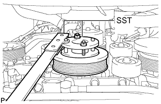
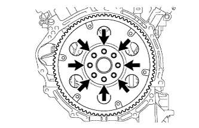
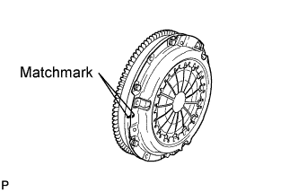
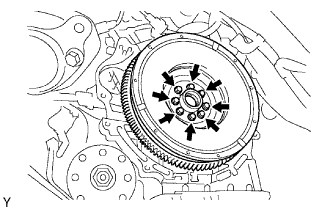
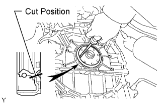

REAR CRANKSHAFT OIL SEAL > REMOVAL |
| 1. REMOVE AUTOMATIC TRANSMISSION ASSEMBLY (for Automatic Transmission) |
Remove the automatic transmission (Click here).
| 2. REMOVE MANUAL TRANSMISSION ASSEMBLY (for Manual Transmission) |
Remove the manual transmission (Click here).
| 3. REMOVE DRIVE PLATE AND RING GEAR SUB-ASSEMBLY (for Automatic Transmission) |
 |
Using SST, hold the crankshaft.
 |
Remove the 8 bolts, rear spacer, drive plate and front spacer.
| 4. REMOVE CLUTCH COVER ASSEMBLY (for Manual Transmission) |
 |
Put matchmarks on the clutch cover and flywheel.
Loosen each set bolt one turn at a time until spring tension is released.
Remove the 6 set bolts, and pull off the clutch cover.
| 5. REMOVE CLUTCH DISC ASSEMBLY (for Manual Transmission) |
| 6. REMOVE FLYWHEEL SUB-ASSEMBLY (for Manual Transmission) |
Using SST, hold the crankshaft.
 |
Remove the 8 bolts and flywheel.
| 7. REMOVE REAR CRANKSHAFT OIL SEAL |
 |
Using a knife, cut off the lip of the oil seal.
Using a screwdriver, pry out the oil seal.